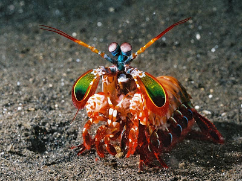

Fatos sobre o Stomatopoda
Stomatopoda
Stomatopoda, ou lacraia-do-mar para os mais íntimos, é uma ordem de crustáceos marinhos que agrupa cerca de 400 espécies, caracterizadas principalmente pela morfologia da segunda pata torácica, que é modificada em apêndice subquelado, lembrando uma pata de louva-a-deus.
| Classificação científica | |||||
|---|---|---|---|---|---|
| Reino: | Filo: | Subfilo: | Classe: | Subclasse: | Ordem: |